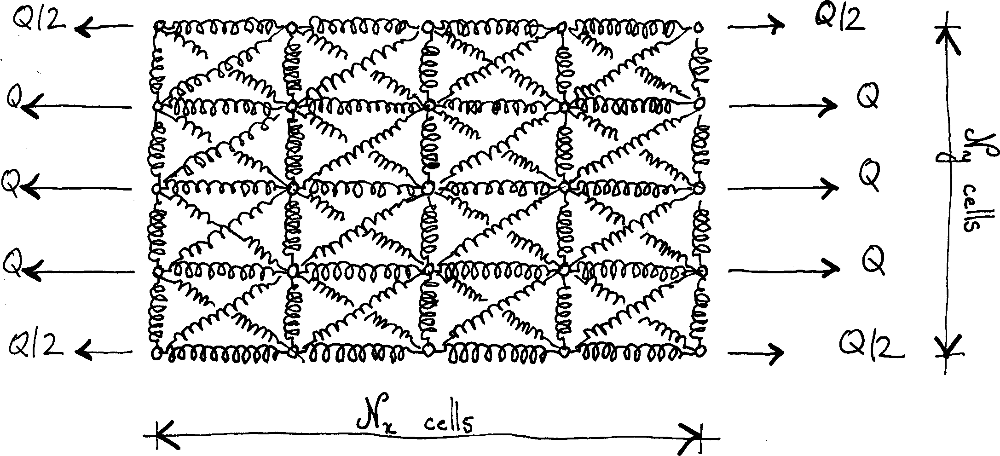

using DelimitedFiles
using LinearAlgebra
using Plots
using TestIn this post, we compute numeric values of the apparent stiffness introduced in this post. Our goal is to find the solution to the general problem depicted below.

We use a numeric approach that is akin to the finite element method. More precisely, we minimize the total potential energy of the spring with respect to the nodal displacements.
This time, we will use the Julia programming language.
We first define a function that returns the stiffness matrix ox a single spring, according to this post.
"""spring_stiffness_matrix(k, nx, ny)
Return the stiffness matrix of the spring with stiffness `k` and direction `(nx, ny)`.
The direction must be a unit vector (`nx² + ny² == 1`).
The degrees of freedom of the spring are ordered as follows:
1. horizontal displacement of node 1,
2. vertical displacement of node 1,
3. horizontal displacement of node 2,
4. vertical displacement of node 2.
"""
function spring_stiffness_matrix(k, nx, ny)
kxx = k * nx * nx
kyy = k * ny * ny
kxy = k * nx * ny
return [
kxx kxy -kxx -kxy;
kxy kyy -kxy -kyy;
-kxx -kxy kxx kxy;
-kxy -kyy kxy kyy]
endWe then define a structure that holds the description of the mesh. See this post for a description of the various symbols. Note that for the sake of simplicity, it is assumed that the number of cells is identical in both directions.
struct SpringMesh
χx::Float64
χy::Float64
θ::Float64
ncells::Int
ndofs::Int
SpringMesh(χx, χy, θ, ncells) = new(χx, χy, θ, ncells, 2 * (ncells+1)^2)
endWe define a function that computes the linear index of the node located at (i⋅Δx, j⋅Δy). It would probably have been better to use CartesianIndices for this purpose.
"""node_at(i, j, mesh)
Return the linear indnex of the node located at `(i, j)` in the mesh.
Note that `i` and `j` are zero-based, while the returned index in one-based.
"""
function node_at(i, j, mesh)
(mesh.ncells+1)*j+i+1
endTo assemble the global stiffness matrix, we add block-wise the element stiffness matrix of each spring.
"""
add_spring_stiffness_matrix!(K, i1, j1, i2, j2, mesh, Ke)
Add to the global stiffness matrix `K` the element stiffness matrix `Ke`.
The spring connects nodes `(i1, j1)` and `(i2, j2)` (0-based indices).
"""
function add_spring_stiffness_matrix!(K, i1, j1, i2, j2, mesh, Ke)
n1 = node_at(i1, j1, mesh)
n2 = node_at(i2, j2, mesh)
index = [2n1-1, 2n1, 2n2-1, 2n2]
for i = 1:4
for j = 1:4
K[index[i], index[j]] += Ke[i, j]
end
end
end"""Return the stiffness matrix"""
function global_stiffness_matrix(mesh)
K = zeros(mesh.ndofs, mesh.ndofs)
c = cos(mesh.θ)
s = sin(mesh.θ)
K_h = spring_stiffness_matrix(mesh.χx, 1., 0.)
K_v = spring_stiffness_matrix(mesh.χy, 0., 1.)
K_d1 = spring_stiffness_matrix(1., c, s)
K_d2 = spring_stiffness_matrix(1., -c, s)
for i = 0:mesh.ncells
for j = 0:mesh.ncells
if i < mesh.ncells
add_spring_stiffness_matrix!(K, i, j, i + 1, j, mesh, K_h)
end
if j < mesh.ncells
add_spring_stiffness_matrix!(K, i, j, i, j + 1, mesh, K_v)
end
if (i < mesh.ncells) && (j < mesh.ncells)
add_spring_stiffness_matrix!(K, i, j, i + 1, j + 1, mesh, K_d1)
add_spring_stiffness_matrix!(K, i + 1, j, i, j + 1, mesh, K_d2)
end
end
end
return K
endThe forces are applied only on the left and right boundaries. Assembly of the vector of nodal forces is done below.
"""nodal_forces(mesh)
Return the vector of nodal forces.
The total force applied on each side is 1.
"""
function nodal_forces(mesh)
F = zeros(mesh.ndofs)
f = 1. / mesh.ncells
for j=1:mesh.ncells-1
F[2 * node_at(0, j, mesh)-1] = -f
F[2 * node_at(mesh.ncells, j, mesh)-1] = f
end
F[2 * node_at(0, 0, mesh)-1] = -0.5 * f
F[2 * node_at(0, mesh.ncells, mesh)-1] = -0.5 * f
F[2 * node_at(mesh.ncells, 0, mesh)-1] = 0.5 * f
F[2 * node_at(mesh.ncells, mesh.ncells, mesh)-1] = 0.5 * f
return F
endWe need to account for the boundary conditions that will prevent rigid body motion. We first define a general function that modifies the linear system to account for a fixed dof.
"""apply_bc!(K, F, fixed_dof, mesh)
Modify the stiffness matrix and vector of nodal forces to account for a fixed dof.
"""
function apply_bc!(K, F, fixed_dof, mesh)
for dof = 1:mesh.ndofs
K[fixed_dof, dof] = 0.
K[dof, fixed_dof] = 0.
end
K[fixed_dof, fixed_dof] = 1.
F[fixed_dof] = 0.
endThe above function is then used to pin the lower-left corner and prevent vertical displacements of the lower-right corner as well as horizontal displacements of the upper-left corner.
function apply_bcs!(K, F, mesh)
n0 = node_at(0, 0, mesh)
apply_bc!(K, F, 2n0-1, mesh)
apply_bc!(K, F, 2n0, mesh)
n1 = node_at(mesh.ncells, 0, mesh)
apply_bc!(K, F, 2n1, mesh)
n2 = node_at(0, mesh.ncells, mesh)
apply_bc!(K, F, 2n2-1, mesh)
endFinally, the apparent stiffness is computed according to this post.
function apparent_stiffness(mesh)
K = global_stiffness_matrix(mesh)
F = nodal_forces(mesh)
apply_bcs!(K, F, mesh)
u = K\F
elongation = 0.
for j = 0:mesh.ncells
left = 2 * node_at(0, j, mesh)-1
right = 2 * node_at(mesh.ncells, j, mesh)-1
weight = (j == 0) || (j == mesh.ncells) ? 0.5 : 1.0
elongation += weight * (u[right] - u[left])
end
elongation /= mesh.ncells
return 1. / elongation
endWe use the symbolic expressions derived in this post to test our implementation.
actual_stiffness(χ, n) = apparent_stiffness(SpringMesh(χ, χ, π/4, n))
effective_stiffness(χ) = χ*(χ+2)/(χ+1)
expected_stiffness_1x1(χ) = 4χ*(χ+1)/(2χ+1)
expected_stiffness_2x2(χ) = 8χ*(1+χ)*(2+χ)/(2χ+3)/(3χ+2)
expected_stiffness_3x3(χ) = 144χ*(χ+1)*(4*χ^4+24χ^3+41χ^2+24χ+4)/(480χ^5+2888χ^4+5616χ^3+4771χ^2+1800χ+236)
@testset "Apparent stiffness" begin
χ = 2.0 .^ LinRange(-7, 7, 13)
@test actual_stiffness.(χ, 1) ≈ expected_stiffness_1x1.(χ)
@test actual_stiffness.(χ, 2) ≈ expected_stiffness_2x2.(χ)
@test actual_stiffness.(χ, 3) ≈ expected_stiffness_3x3.(χ)
end;Test Summary: | Pass Total Time
Apparent stiffness | 3 3 1.4sWe then are ready to produce the figures that were used in this post.
χ = 2.
χx = χ
χy = χ
θ = π / 4.
npoints = 7
ncells = 1 .<< (0:(npoints-1))
A_app = zeros(npoints)
for i = 1:npoints
print("$(ncells[i]), ")
mesh = SpringMesh(χx, χy, θ, ncells[i])
A_app[i] = apparent_stiffness(mesh)
println(A_app[i])
endAx = cot(θ)*(1+cos(2θ)+χx)
Ay = tan(θ)*(1-cos(2θ)+χy)
Axy = sin(2θ)
A_eff = Ax - Axy^2 / Ayerr = (A_app[:] .- A_eff) / A_eff
plot(ncells, 100*err,
axis=:log,
marker=:circle,
label="",
xlabel="Number of cells",
ylabel="Relative error [%]",
title="Relative error on effective stiffness")dir = joinpath("..", "What_is_homogenization-files")
basename = "apparent_stiffness_vs_number_of_cells"
savefig(joinpath(dir, basename * ".png"))
# savefig(basename * ".pdf")open(joinpath(dir, basename * ".csv"), "w") do io
write(io, "# Apparent, uniaxial stiffness vs. number of cells\n")
write(io, "# chi_x = $χx\n")
write(io, "# chi_y = $χy\n")
write(io, "# theta = $θ rad\n")
writedlm(io, [ncells A_app], ",")
endχ = 10.0 .^ LinRange(-2, 2, 41)
eff = effective_stiffness.(χ)
plot(χ, (expected_stiffness_1x1.(χ).-eff)./eff, label="1×1",
xaxis=:log, xlabel="Stiffness ratio, χ", ylabel="Relative error")
plot!(χ, (expected_stiffness_2x2.(χ).-eff)./eff, label="2×2")
plot!(χ, (expected_stiffness_3x3.(χ).-eff)./eff, label="3×3")basename = "apparent_stiffness_vs_chi"
savefig(joinpath(dir, basename * ".png"))